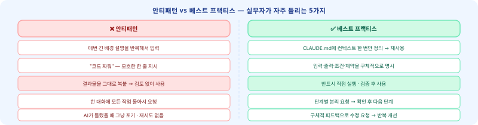

리더스아카데미팀 · 바이브 코딩 중급
Claude Code
실무 적용 마스터
이런 경험 있으셨나요?
"매번 같은 설명을 반복해서 입력한다" · "Claude가 내 스타일을 기억 못 한다" · "팀원마다 사용법이 제각각이다"
오늘 이 세 가지가 전부 해결됩니다.
📄 CLAUDE.md
⚡ Skills
🪝 Hooks
🤖 Subagents
🔌 MCP
직군별 케이스 5종
실습 체크리스트
Agenda
02 / 26
오늘 배우는 것 — 5단계 흐름

오늘 완료 목표
① CLAUDE.md 자기 버전 작성
② Skills 명령어 1개 등록
③ Hooks 차단 규칙 1개 설정
② Skills 명령어 1개 등록
③ Hooks 차단 규칙 1개 설정
전제 조건
✅ Claude Code CLI 설치 완료
✅ 인증(claude login) 완료
✅ 기초 과정 수강 또는 기본 대화 경험
✅ 인증(claude login) 완료
✅ 기초 과정 수강 또는 기본 대화 경험
기대 효과
반복 입력 → 0회
위험 명령 자동 차단
직군별 맞춤 워크플로우
위험 명령 자동 차단
직군별 맞춤 워크플로우
CLAUDE.md — WHAT
03 / 26
CLAUDE.md — Claude에게 보내는 영구 지시서
📄
한 줄 정의
새 대화를 시작할 때마다 Claude가 자동으로 읽는 마크다운 파일 — 역할·규칙·금지사항·선호 형식을 한 번만 써두면 매 대화에 적용됩니다.
1
Managed Policy
Anthropic 운영 기준 — 변경 불가. 모든 층위 위에 있음.
2
Project
./CLAUDE.md팀 전체가 공유하는 프로젝트 설정. git에 커밋해서 팀 표준화.
3
User
~/.claude/CLAUDE.md내 모든 프로젝트에 적용되는 개인 설정. 습관·선호·금지어 등.
4
Local
.claude/CLAUDE.mdgitignore 권장. 개인 민감 설정 (토큰, 로컬 경로 등).
✨
Auto Memory (v2.1+)
~/.claude/projects/<project>/memory/MEMORY.md — 대화 중 Claude가 자동으로 기억을 저장·불러오는 5번째 계층. 수동 작성 불필요.CLAUDE.md — HOW
04 / 26
CLAUDE.md 기본 템플릿 — 지금 바로 복사하세요
CLAUDE.md
# HR 업무 보조 — 나의 Claude 설정 ## 역할 당신은 HR 전문가 보조 AI입니다. 인사·교육·채용 관련 문서를 작성합니다. ## 절대 규칙 - 개인정보(이름, 사번, 연봉)는 절대 출력 금지 - 결론 먼저, 배경 나중 (두괄식 항상) - 한국어로만 답변 ## 선호 형식 - 교육 기획안: Kirkpatrick 4단계 구조 - 보고서: 요약 → 상세 → 액션 아이템 - 코드: 주석을 한국어로 ## 금지 표현 - "~인 것 같습니다" (단정하지 않는 표현) - "죄송합니다"로 시작하는 문장
필수 4섹션
역할(Role) — 어떤 전문가로 행동할지
절대 규칙(Rules) — 반드시 지킬 것
선호 형식(Format) — 출력 양식
금지 표현(Banned) — 쓰면 안 되는 것
절대 규칙(Rules) — 반드시 지킬 것
선호 형식(Format) — 출력 양식
금지 표현(Banned) — 쓰면 안 되는 것
실무 팁
• 처음엔 3~5줄로 시작 — 길수록 좋은 게 아님
• 3회 이상 같은 수정 요청 → CLAUDE.md에 규칙 추가
• 팀 공용: git에 커밋 → 팀원 전원 동일 설정
• 3회 이상 같은 수정 요청 → CLAUDE.md에 규칙 추가
• 팀 공용: git에 커밋 → 팀원 전원 동일 설정
⚠️
주의
파일 경로·API 키·개인 토큰은 절대 CLAUDE.md에 쓰지 마세요. 팀 공용 파일이면 git에 올라갑니다.
CLAUDE.md — VALUE
05 / 26
CLAUDE.md 도입 전·후 — 업무 흐름이 이렇게 달라집니다

자가진단 1
매 대화마다 "너는 HR 전문가야…" 같은 배경 설명을 반복 입력하고 있다면?
CLAUDE.md 미사용
CLAUDE.md 미사용
자가진단 2
팀원 A는 Claude가 친절하게 답하고, 팀원 B는 딱딱하게 답한다면?
팀 공용 CLAUDE.md 필요
팀 공용 CLAUDE.md 필요
이런 분께 추천
✅ 반복 입력에 지친 분
✅ 팀 AI 사용 표준화가 필요한 분
✅ 출력 형식을 통일하고 싶은 분
✅ 팀 AI 사용 표준화가 필요한 분
✅ 출력 형식을 통일하고 싶은 분
Skills — WHAT
06 / 26
Skills — /슬래시 명령어로 업무를 자동화
⚡
한 줄 정의
/명령어 입력 한 번으로 복잡한 반복 작업을 실행하는 커스텀 슬래시 명령어. SKILL.md 파일 하나로 정의합니다.📁
저장 위치
.claude/skills/<name>/SKILL.md파일명이 곧 명령어 이름이 됩니다.
⚡
Live Change Detection
SKILL.md를 저장하면 Claude 재시작 없이 즉시 반영. 실시간으로 수정하며 테스트 가능.
🔗
$ARGUMENTS 변수
/기획서 팀빌딩 신입사원 60분 처럼 명령어 뒤 인자를 자동으로 주입합니다.WHEN — 이럴 때 쓰세요
• 같은 양식의 문서를 매번 새로 작성할 때
• 특정 프레임워크(STAR, SBI, OKR)를 반복 적용할 때
• 팀 전체가 동일한 방식으로 Claude를 써야 할 때
• 특정 프레임워크(STAR, SBI, OKR)를 반복 적용할 때
• 팀 전체가 동일한 방식으로 Claude를 써야 할 때
실사용 예시
/기획서 [회의 핵심 3줄]/수강후기분석 [파일첨부]/고객답변 [문의유형]
Skills — HOW
07 / 26
SKILL.md 작성법 — 지금 바로 만들어 봅시다
.claude/skills/교육기획/SKILL.md
--- name: 교육기획 description: 주제와 대상을 입력하면 교육 기획안 초안을 생성합니다 --- # 지시사항 교육 기획안을 작성합니다. Kirkpatrick 4단계 평가 모델 적용. # 입력값 주제·대상·시간: $ARGUMENTS # 출력 형식 1. 학습 목표 (Bloom 분류 기반) 2. 커리큘럼 (모듈별 시간 배분) 3. 평가 방법 (Kirkpatrick 1~4단계) 4. 준비물 및 주의사항 # 제약 - 반드시 두괄식으로 작성 - 학습 목표는 동사로 시작
frontmatter 필수 필드
name: 슬래시 명령어 이름description: Claude가 언제 이 스킬을 쓸지 판단하는 기준
호출 방법
/교육기획 리더십 팀장급 4시간→
$ARGUMENTS = "리더십 팀장급 4시간"→ Kirkpatrick 기반 기획안 즉시 생성
팀 공유 방법
.claude/ 폴더를 git에 커밋→ 팀원 전원 같은 Skills 사용
→ 표준 워크플로우 즉시 배포
Skills — VALUE
08 / 26
Skills 자가진단 — 나의 반복 업무를 찾아보세요
Skills로 자동화하기 좋은 업무
- 매주 회의록에서 액션 아이템 추출
- 표준 양식 보고서 초안 작성
- 수강 후기·설문 데이터 분류·분석
- 고객 문의 유형별 답변 초안
- PR/코드 1차 리뷰 체크리스트
지금 바로 만들 수 있는 Skills
HR/HRD:
기획자:
개발자:
영업/CS:
/수강후기분석 · /교육기획기획자:
/기획서 · /회의록개발자:
/pr리뷰 · /테스트케이스영업/CS:
/고객답변 · /제안서초안
💡
실습 과제
지금 당장 가장 자주 하는 반복 문서 작업 1개를 골라 SKILL.md를 작성해 보세요. 5분이면 첫 번째 스킬이 완성됩니다.
Hooks — WHAT
09 / 26
Hooks — Claude의 모든 행동에 규칙을 거는 가드레일
🪝
한 줄 정의
Claude가 도구를 사용하거나 멈출 때 자동으로 실행되는 셸 명령어. 위험 명령 차단, 자동 로깅, 알림 전송 등을 코드로 강제합니다.
PreToolUse
도구 실행 직전
차단·검증에 사용
차단·검증에 사용
PostToolUse
도구 실행 직후
로깅·알림에 사용
로깅·알림에 사용
Stop
Claude 완료 시
완료 알림·정리에 사용
완료 알림·정리에 사용
SubagentStop
서브에이전트 완료 시
결과 수집에 사용
결과 수집에 사용
exit 0 — 허용
exit 0
Claude 계속 진행
Claude 계속 진행
exit 1 — 경고
exit 1
경고 메시지 표시, 진행은 허용
경고 메시지 표시, 진행은 허용
exit 2 — 강제 차단
exit 2
실행 완전 중단
실행 완전 중단
Hooks — HOW
10 / 26
Hooks 설정 — 위험 명령 자동 차단 예시
.claude/settings.json
{ "hooks": { "PreToolUse": [{ "matcher": "Bash", "hooks": [{ "type": "command", "command": "if echo \"$CLAUDE_TOOL_INPUT\" | grep -q 'rm -rf'; then echo '위험 명령어 차단됨'; exit 2; fi" }] }], "PostToolUse": [{ "matcher": "Write", "hooks": [{ "type": "command", "command": "echo \"[LOG] 파일 수정: $(date)\" >> ~/claude-log.txt" }] }] } }
위 설정이 하는 일
🛡️
📝 파일 수정 시마다 자동 로그 기록
matcher: "Bash" → bash 명령만 검사
matcher: "Write" → 파일 쓰기만 검사
matcher: "*" → 모든 도구 검사
rm -rf 명령 감지 시 즉시 차단📝 파일 수정 시마다 자동 로그 기록
matcher: "Bash" → bash 명령만 검사
matcher: "Write" → 파일 쓰기만 검사
matcher: "*" → 모든 도구 검사
활용 아이디어
• Stop hook: 작업 완료 시 슬랙 알림 전송
• PreToolUse: prod DB 접근 전 확인 요청
• PostToolUse: git push 후 CI 상태 확인
• SubagentStop: 에이전트 결과 자동 저장
• PreToolUse: prod DB 접근 전 확인 요청
• PostToolUse: git push 후 CI 상태 확인
• SubagentStop: 에이전트 결과 자동 저장
⚠️
주의
Hook 스크립트는 Claude와 같은 권한으로 실행됩니다. 신뢰할 수 없는 코드를 Hook에 넣지 마세요.
Hooks — VALUE
11 / 26
Hooks 자가진단 — 우리 팀에 필요한 가드레일은?
지금 당장 유용한 Hook 시나리오
- Claude가 민감 파일(.env) 수정 시 차단
- 작업 완료 시 슬랙·카카오 알림 자동 발송
- 특정 브랜치에만 push 허용
- 매 파일 수정 시 변경 이력 자동 기록
- 외부 API 호출 전 비용 확인 메시지
Hooks vs CLAUDE.md 차이
CLAUDE.md: Claude에게 "하지 마"라고 부탁
→ Claude가 실수로 지키지 않을 수 있음
Hooks (exit 2): 코드로 강제 차단
→ Claude가 원해도 실행 불가
중요 규칙은 Hooks로 강제하세요
→ Claude가 실수로 지키지 않을 수 있음
Hooks (exit 2): 코드로 강제 차단
→ Claude가 원해도 실행 불가
중요 규칙은 Hooks로 강제하세요
💡
실습 과제
우리 팀에서 Claude가 절대 해서는 안 되는 행동 1가지를 찾아
PreToolUse Hook으로 차단해 보세요.Subagents — WHAT
12 / 26
Subagents — 여러 Claude가 동시에 일합니다
🤖
한 줄 정의
복잡한 작업을 여러 전문 에이전트에게 분배해서 병렬로 처리하는 기능. 내가 지시하면 각 에이전트가 독립적으로 작업하고 결과를 취합합니다.
🔍
Explore
코드베이스·파일 탐색 전문. "이 프로젝트에 버그가 어디 있어?" 같은 탐색 작업에 최적화.
📐
Plan
구현 계획·아키텍처 설계 전문. "이걸 어떻게 만들어야 할까?" 같은 설계 작업에 최적화.
🛠️
general-purpose
범용 에이전트. 웹 검색, 파일 읽기/쓰기, 코드 실행 등 다양한 작업 처리.
WHEN — 이럴 때 쓰세요
• 리서치 + 초안 작성을 동시에 해야 할 때
• 여러 파일을 독립적으로 분석할 때
• 회의록 정리 + 성과 보고서를 병렬로 만들 때
• 여러 파일을 독립적으로 분석할 때
• 회의록 정리 + 성과 보고서를 병렬로 만들 때
주의 사항
❌ Subagent 안에서 다시 Subagent 생성 불가 (중첩 금지)
❌ Subagent끼리 직접 통신 불가
✅ 메인 Claude가 결과를 취합
❌ Subagent끼리 직접 통신 불가
✅ 메인 Claude가 결과를 취합
Subagents — HOW
13 / 26
커스텀 Subagent 정의 — agents/ 폴더에 파일 하나면 됩니다
.claude/agents/회의록정리.md
--- name: 회의록정리 description: 회의 내용을 받아 액션 아이템과 결정사항을 구조화합니다 tools: [Read, Write] --- ## 역할 당신은 회의록 정리 전문가입니다. 회의 내용에서 중요한 것만 추출합니다. ## 출력 형식 ### 결정 사항 - (항목별 기재) ### 액션 아이템 | 내용 | 담당자 | 기한 | |------|--------|------| ## 규칙 - 발언자 이름·직책 제거 - 액션 아이템은 담당자 명시 필수 - 모호한 항목은 질문 형식으로 표시
frontmatter 주요 필드
name: 에이전트 이름description: 언제 이 에이전트를 쓸지tools: 허용 도구 목록 (보안 제한)
호출 예시
"오늘 팀 미팅 내용이야. 회의록정리 에이전트로 정리해줘."또는 병렬 처리:
"회의록 정리 + 다음 주 아젠다 준비를 동시에 해줘."
팀 활용 아이디어
• 회의록정리 에이전트
• 성과요약 에이전트
• 수강후기분석 에이전트
→ 팀원 전원이 동일하게 사용
• 성과요약 에이전트
• 수강후기분석 에이전트
→ 팀원 전원이 동일하게 사용
Subagents — VALUE
14 / 26
Subagents 자가진단 — 병렬 처리로 시간을 아끼세요
지금 당장 병렬화 가능한 업무
- 리서치 + 보고서 초안 동시 작업
- 여러 파일의 독립적 번역·요약
- 회의록 정리 + 다음 아젠다 준비
- 여러 채널 고객 문의 동시 답변 초안
- 여러 팀원 주간 보고 취합·요약
Subagents vs 단일 Claude 비교
단일 Claude: A완료 → B완료 → C완료 (직렬)
Subagents: A+B+C 동시 (병렬)
3개 작업 각 10분 → 단일: 30분 vs Subagents: ~12분
복잡할수록 효과 극대화
Subagents: A+B+C 동시 (병렬)
3개 작업 각 10분 → 단일: 30분 vs Subagents: ~12분
복잡할수록 효과 극대화
💡
실습 과제
내 업무 중 "A가 끝나야 B를 할 수 있는" 구조가 아닌 것들을 찾아보세요. 그게 바로 Subagents 대상입니다.
MCP — WHAT
15 / 26
MCP — Claude가 외부 도구를 직접 쓰게 하는 표준 프로토콜
🔌
한 줄 정의
Model Context Protocol — Claude가 GitHub, Google Drive, Slack, 데이터베이스 등 외부 서비스를 직접 읽고 쓸 수 있게 연결하는 공개 표준.
🌐
MCP Registry
공식 MCP 서버 목록. GitHub, Slack, Notion, Google Drive 등 검증된 서버 즉시 사용 가능.
claude mcp search로 검색.
claude mcp search로 검색.
🔒
scope 3단계
user: 내 모든 프로젝트project: 이 프로젝트만local: 이 기기만 (gitignore)
🔑
API 토큰 관리
토큰은 반드시 환경변수로 관리.
"$GITHUB_TOKEN" 형식 — settings.json에 평문 절대 금지.| 연결 서비스 | Claude가 할 수 있는 것 | 활용 직군 |
|---|---|---|
| GitHub | PR 읽기·댓글 작성·이슈 생성 | 개발자 |
| Google Drive | 문서 읽기·스프레드시트 수정 | 기획·HR |
| Slack | 메시지 전송·채널 읽기 | 전 직군 |
MCP — HOW
16 / 26
MCP 연결 방법 — CLI 명령어 하나로 시작
터미널 — MCP 서버 추가
# GitHub MCP 추가 (project scope) claude mcp add @modelcontextprotocol/server-github \ --scope project \ -e GITHUB_TOKEN=$GITHUB_TOKEN # 설치된 MCP 목록 확인 claude mcp list # MCP 제거 claude mcp remove github
.claude/settings.json — 수동 설정
{ "mcpServers": { "github": { "command": "npx", "args": ["-y", "@modelcontextprotocol/server-github"], "env": {"GITHUB_TOKEN": "$GITHUB_TOKEN"} } } }
MCP 사용 예시 (GitHub 연결 후)
"오늘 올라온 PR 목록 보여줘""#123 이슈에 댓글 달아줘""main 브랜치 최신 커밋 요약해줘"
mcp_tool Hooks (v2.1.118+)
MCP 도구 호출에도 Hooks 적용 가능.
matcher: "mcp__github__*" 패턴으로 MCP별 규칙 설정.
⚠️
보안 주의
MCP 서버는 외부 프로세스입니다. 공식 Registry(
claude mcp search)에서 검증된 서버만 사용하세요.MCP — VALUE
17 / 26
MCP 자가진단 — 내 업무 도구를 Claude에 연결하면?
MCP로 가능해지는 것
- GitHub PR 자동 1차 리뷰 + 댓글
- Google Drive 제안서 읽고 맞춤화 초안
- Slack 채널 분위기 분석 + 주간 보고
- Notion 데이터베이스 읽고 업데이트
- Jira 이슈 생성·상태 변경 자동화
5대 기능 종합 비교
📄 CLAUDE.md: 컨텍스트 설정
⚡ Skills: 반복 업무 자동화
🪝 Hooks: 규칙 강제 + 알림
🤖 Subagents: 복잡 작업 병렬 처리
🔌 MCP: 외부 서비스 직접 연결
→ 조합할수록 강력해집니다
⚡ Skills: 반복 업무 자동화
🪝 Hooks: 규칙 강제 + 알림
🤖 Subagents: 복잡 작업 병렬 처리
🔌 MCP: 외부 서비스 직접 연결
→ 조합할수록 강력해집니다
💡
실습 과제
지금 가장 자주 여는 외부 도구(GitHub, Slack, Google Drive...)를 하나 골라 MCP로 연결해 보세요.
claude mcp search [서비스명]으로 검색합니다.직군 케이스 — 개발자
18 / 26
개발자 케이스 — PR 리뷰 자동화

🧑💻 시나리오
PR 리뷰 요청이 쏟아질 때
Before
PR 올라오면 팀원이 하나씩 열어서 직접 읽음 → 리뷰 댓글 작성 평균 30~60분. 급하면 형식적 리뷰 → 버그 나중에 발견 → 재작업
After
PR push 시 Hooks 자동 발동 → AI 1차 리뷰 (네이밍·에러 핸들링·중복 로직 감지) → 사람은 로직 판단만. CLAUDE.md에 코드 스타일·금지 패턴 고정 → 프로젝트마다 재설명 불필요
리뷰 시간 60% 단축
30~60분 → 10~15분
반복 지적 0건
🛠️ 기술 구현
CLAUDE.md — 코드 스타일 섹션
## 코드 리뷰 기준 # 이 프로젝트의 코딩 규칙 ## 필수 체크 항목 - 함수명: 동사+명사 camelCase - 에러 처리: try-catch 필수 - 중복 로직: 3회 이상 시 함수 분리 ## 금지 패턴 - any 타입 사용 금지 (TypeScript) - console.log 프로덕션 코드 금지 - 매직 넘버 하드코딩 금지 ## PR 리뷰 형식 우선순위: 🔴 필수수정 / 🟡 권고 / 🟢 칭찬 각 항목: 파일명:라인번호 + 이유 + 수정안
직군 케이스 — 기획자
19 / 26
기획자 케이스 — 기획서 초안 자동화
📋 시나리오
회의 후 기획서 초안에 반나절 쏟는 반복
Before
회의 종료 → 메모 정리 → 기획서 양식 열기 → 목적·배경·요구사항 직접 타이핑 → 2~3시간. 초안 쓰다가 방향이 맞는지 의심 → 재검토 반복
After
Skills에 "기획서 초안 생성기" 등록 →
/기획서 [회의 핵심 3줄] 입력 → 표준 양식 초안 30초 완성. CLAUDE.md에 회사 기획서 포맷·금지 표현·필수 섹션 고정
초안 2~3시간 → 30분
포맷 통일률 100%
🛠️ 기술 구현
.claude/skills/기획서/SKILL.md
--- name: 기획서 description: 회의 핵심 내용으로 기획서 초안 생성 --- # 지시사항 회사 표준 기획서 양식으로 초안 작성. # 입력 회의 내용 / 주제 / 목표: $ARGUMENTS # 출력 구조 1. 배경 및 목적 (2문장) 2. 추진 범위 및 대상 3. 주요 요구사항 (bullet 5개 이내) 4. 기대 효과 (정량 지표 포함) 5. 일정 및 담당자 (표 형식) 6. 리스크 및 대응 방안
직군 케이스 — HR/HRD
20 / 26
HR/HRD 케이스 — 교육 기획 + 수강후기 분석
🎓 시나리오
교육 기획 + 수강후기 100건 분석
Before
과정 기획 목표·대상·커리큘럼 직접 작성 (3~4시간). 수강후기 100건 → 엑셀로 직접 정리 → 인사이트 도출 (반나절)
After
Projects에 "HRD 과정 설계" 생성 → CLAUDE.md에 Kirkpatrick 4단계·Bloom 분류 고정.
/수강후기분석 Skills → AI가 긍/부정 분류 + 개선 포인트 자동 추출
기획 3~4시간 → 1시간
후기 분석 반나절 → 10분
🛠️ 기술 구현
.claude/skills/수강후기분석/SKILL.md
--- name: 수강후기분석 description: 수강 후기 파일을 분류·분석하여 개선 포인트를 추출합니다 --- # 지시사항 수강 후기를 분석하여 보고서 작성. # 분석 항목 1. 긍정/부정/중립 비율 (%) 2. 긍정 키워드 Top 5 3. 개선 요구 키워드 Top 5 4. 강사 관련 피드백 분리 5. 다음 기수 개선 제언 3가지 # 제약 - 수강생 이름 절대 출력 금지 - 수치는 후기 건수 대비 % 표기
직군 케이스 — 리더/팀장
21 / 26
리더·팀장 케이스 — 회의록 + 성과 보고 병렬 처리
👔 시나리오
회의록 정리 + 팀원 성과 보고서 초안
Before
주간 회의 60분 → 회의록 정리 30분 → 액션 아이템 추출 + 담당자 배분 → 총 90분. 월말 성과 보고서: 팀원 4~5명 업무 취합 → 요약 → 경영진 보고용 변환 → 2~3시간
After
Subagents: "회의록 정리 에이전트" + "성과 요약 에이전트" 병렬 운용. 회의록 붙여넣기 → 자동으로 액션 아이템·담당자·기한 추출
회의 정리 90분 → 15분
월말 보고서 2~3시간 → 30분
🛠️ 기술 구현
CLAUDE.md — 보고서 포맷 섹션
## 보고서 포맷 ### 회의록 형식 - 결정 사항 (번호 목록) - 액션 아이템 | 담당자 | 기한 (표) - 다음 회의 아젠다 ### 성과 보고 형식 # 경영진 보고용 — 간결·수치 중심 - 이번 달 주요 성과 (3줄) - 목표 대비 달성률 (%) - 다음 달 집중 과제 (2개) ### 직급별 어조 - 경영진 보고: 결론 → 수치 → 다음 단계 - 팀원 공유: 맥락 → 결론 → 요청사항
직군 케이스 — 영업/CS
22 / 26
영업·CS 케이스 — 제안서 + 이메일 반자동화
💼 시나리오
RFP 제안서 초안 + 반복 이메일 답변
Before
RFP 수신 → 기존 제안서 뒤지기 → 맞춤화 작업 → 반나절~하루. 고객 문의 메일 하루 20~30건 → 유사 내용 반복 답변 → 2~3시간
After
MCP(Google Drive) 연결 → 기존 제안서 자동 참조 + 맞춤화 초안 생성. Skills에 "고객 답변 초안" 등록 → 문의 유형별 템플릿 자동 선택 + 커스터마이징
제안서 하루 → 2시간
반복 메일 2~3시간 → 30분
🛠️ 기술 구현
CLAUDE.md — 고객사별 톤 설정
## 커뮤니케이션 톤 ### 고객사 규모별 어조 - 대기업: 격식체·전문 용어 허용 - 중소기업: 친근하고 실용적 - 스타트업: 간결·요점 중심 ### 이메일 구조 1. 인사 (1줄) 2. 요약 (1~2줄) 3. 본문 (bullet 3~5개) 4. 다음 단계 + 마감일 5. 클로징 (1줄) ## 절대 규칙 - 가격·계약 조건 임의 제시 금지 - 경쟁사 언급 금지
통합 체크리스트
23 / 26
실무 도입 체크리스트 — 19항목
CLAUDE.md (6항)
- 프로젝트 루트에 CLAUDE.md 파일 생성 완료
- 역할·규칙·형식·금지어 4섹션 작성
- 개인 User CLAUDE.md (~/.claude/CLAUDE.md) 설정
- 팀 공용 CLAUDE.md git 커밋
- 3회 이상 같은 수정 요청 → 규칙으로 편입
- API 키·개인정보 CLAUDE.md 미포함 확인
Skills (4항)
- 반복 업무 1개 이상 SKILL.md로 정의
- /명령어 호출 정상 동작 확인
- $ARGUMENTS 변수 활용
- 팀 공용 Skills git 공유
Hooks (3항)
- PreToolUse 위험 명령 차단 1개 설정
- Stop hook 완료 알림 설정
- exit code 0/1/2 동작 확인
Subagents (3항)
- 내장 3종 (Explore·Plan·general) 각 1회 사용
- 커스텀 에이전트 1개 이상 정의
- 병렬 작업 시나리오 1개 테스트
MCP (3항)
- MCP 서버 1개 이상 연결
- API 토큰 환경변수 관리 확인
- MCP 통해 외부 데이터 읽기 테스트
FAQ + 안티패턴
24 / 26
자주 묻는 질문 + 실무자가 자주 틀리는 것
Q
CLAUDE.md가 너무 길어지면?
300줄 이상이면 오히려 성능 저하. 핵심 규칙만 남기고 상세 내용은 참조 파일로 분리하세요.
@파일경로로 포함.Q
Skills vs CLAUDE.md 차이?
CLAUDE.md = 항상 적용되는 배경 설정. Skills = 특정 명령 시에만 실행되는 액션. 역할은 CLAUDE.md, 작업은 Skills.
Q
Hooks이 너무 많이 차단해요
exit 2 대신 exit 1로 바꿔 경고만 하도록 조정. 또는 matcher를 더 구체적인 패턴으로 좁히세요.
Q
MCP 연결했는데 느려요
MCP 서버는 외부 프로세스. 불필요한 서버는 제거하고 자주 쓰는 것만 남기세요.
claude mcp remove로 정리.Q
팀원이 설정을 다르게 쓰면?
Project CLAUDE.md + .claude/skills/ + .claude/settings.json을 git에 커밋 → 팀원 전원 clone 시 동일 환경 자동 적용.

통합 자가진단
25 / 26
5분 핵심 점검 — 지금 바로 확인
CLAUDE.md
- Project 계층 CLAUDE.md를 직접 열어서 작성해봤다
- 4계층 우선순위(Managed Policy > Project > User > Local)를 설명할 수 있다
Skills
.claude/skills/폴더에 파일을 만들고/명령어로 호출해봤다- 내 업무에서 Skills로 등록할 반복 작업 1가지를 떠올렸다
Hooks
- exit 0 / exit 1 / exit 2 차이를 말할 수 있다
- PreToolUse exit 2가 어떤 상황에 쓰이는지 안다
Subagents
- 내장 에이전트(Explore·Plan·general-purpose) 3종을 안다
- 내 업무에서 "독립 역할 분리"가 필요한 작업 1가지를 떠올렸다
MCP
claude mcp add명령어로 서버를 추가하는 흐름을 안다- 연결하고 싶은 외부 도구 1가지를 골랐다
✅
전부 체크됐다면
체크가 안 되는 항목 → 해당 섹션으로 돌아가 다시 읽기. 이번 주에 1가지만 실제 업무에 적용해 보세요.
다음 단계 · Next Steps
지금 바로
시작하세요
오늘 배운 5가지 중 딱 하나만 골라서 지금 바로 적용해 보세요.
완벽하게 설정한 후 시작하는 것보다 불완전하게라도 쓰기 시작하는 것이 100배 낫습니다.
오늘 (5분)
CLAUDE.md 파일 하나 만들기
역할 + 규칙 3줄만 써도 충분
역할 + 규칙 3줄만 써도 충분
이번 주 (30분)
반복 업무 1개 → Skills 등록
위험 명령 차단 Hook 1개 설정
위험 명령 차단 Hook 1개 설정
이번 달
Subagents + MCP 연결
팀 전체 설정 git 공유 → 표준화
팀 전체 설정 git 공유 → 표준화
공식 참고 자료
📖 공식 문서:
code.claude.com/docs/en/🔌 MCP Registry:
claude mcp search [서비스명]⚡ Skills 가이드:
code.claude.com/docs/en/claude-code/skills🤖 Agent SDK:
npm install @anthropic-ai/claude-agent-sdk